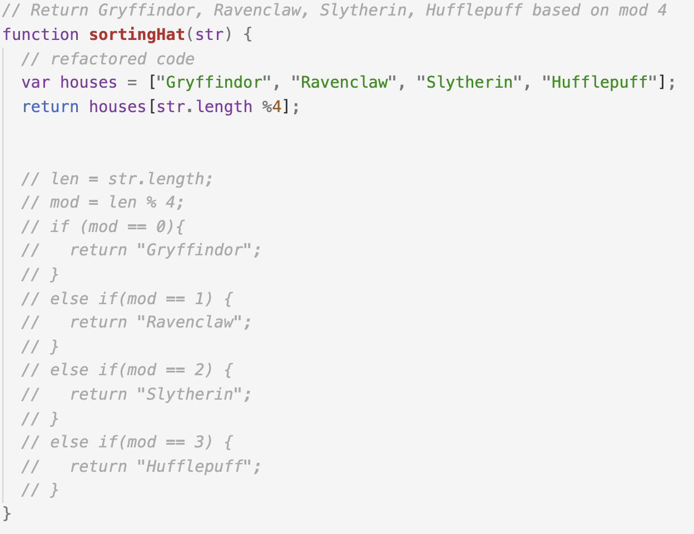
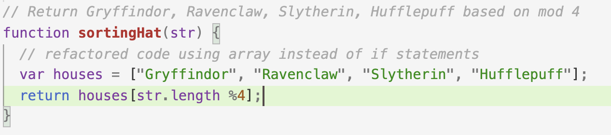

Lab 14: Debugging
Challenge
I did not have any challenges completing this lab./p>
Problems
I did not have any problems with this lab.
Results
Debugging
None of my previous labs needed debugging so I ended up cleaning up some of my old code. For instance, I fixed some of my spacing and added more comments into my code.
Below is an example of how I refactored and recommented code for Lab 12.
